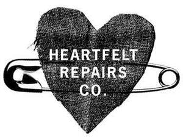
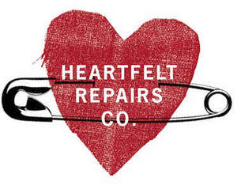

Trade Mark Journal No.2025/030 25 July 2025
UK00004233366 14 July 2025 (25,26,35,37,40,42,45)
Mark 1

Mark 2

- Class 25
- Clothing, headwear, footwear.
- Class 26
- Arm bands [clothing accessories]; artificial blossoms for attachment to clothing; belt buckles for clothing; belt buckles, not of precious metal, for clothing; belt buckles of precious metal, for clothing; birds' feathers [clothing accessories]; borders and edgings for clothing; bra pads for clothing; brooches [clothing accessories]; buckles [clothing accessories]; buckles for clothing; buckles, not of precious metal [clothing accessories]; buckles of precious metal [clothing accessories]; buttons for clothing; clasps for clothing; cloth patches for clothing; clothing buckles; clothing hooks [fasteners]; clothing patches; cords for clothing; edgings for clothing; embroidered badges for clothing; embroidered patches for clothing; eyelets for clothing; fastenings for clothing; feathers [clothing accessories]; frills for clothing; heat adhesive patches for decoration of clothing; heat adhesive patches for repairing clothing; loops for clothing; novelty badges [clothing accessories]; ornamental patches for clothing; ostrich feathers [clothing accessories]; patches for clothing; patches for clothing made of plastic; patches for clothing made of rubber; patches for clothing made of rubber, plastic and vinyl; patches for clothing made of vinyl; patches for repairing clothing; patches for use in the repair of clothing; removable breast enhancer pads [clothing accessories]; removable silicone breast enhancer pads [clothing accessories]; shoulder pads for clothing; silicone bra pads for clothing; spangles for clothing; textile patches for clothing; trimmings for clothing.
- Class 35
- On-line retail services relating to clothing; on-line retail store services in the field of clothing; online retail services relating to clothing; online retail store services in the field of clothing; retail or wholesale services relating to clothing; retail services relating to clothing; retail services in relation to clothing; retail services or wholesale services relating to clothing; retail services relating to clothing provided by clothing boutiques; retail services relating to clothing provided by clothing stores; retail services relating to clothing provided by discount clothing stores; retail services relating to clothing; wholesale services relating to clothing via a distributorship; wholesale services relating to clothing clothing; wholesale services in relation to clothing; wholesale services relating to clothing; provision of consultancy, information and advice relating to the aforesaid.
- Class 37
- Cleaning of clothing; clothing ironing; clothing laundering; clothing laundry; clothing pressing; clothing repair; clothing repair and providing information relating thereto; clothing repair and provision of information relating thereto; clothing washing; ironing of clothing; laundering of cloth, clothing, fabric, linen and textiles; laundering of clothing; laundry services for cloth, clothing, fabric, linen and textiles; maintenance and repair of clothing; mending clothing and providing information relating thereto; mending clothing and provision of information relating thereto; pressing of cloth, clothing, fabric and textiles; pressing of clothing; pressing of clothing and providing information relating thereto; pressing of clothing and provision of information relating thereto; providing information relating to clothing mending services; providing information relating to clothing repair services; providing information relating to the pressing of clothing; provision of information relating to clothing mending services; provision of information relating to clothing repair services; provision of information relating to the pressing of clothing; renovation of clothing; repair and maintenance of clothing; repair of clothing; washing of cloth, clothing, fabric, linen and textiles; washing of clothing; provision of consultancy, information and advice relating to the aforesaid.
- Class 40
- Alteration of clothing; anti-microbial treatment of clothing; applying finishes to clothing; bleaching of clothing; clothing alteration; crease-resistant treatment for clothing; crease resistant treatment of clothing; custom clothing alteration; custom clothing alteration services; custom imprinting of clothing; custom imprinting of clothing with decorative designs; custom imprinting of clothing with messages; dyeing of clothing; fireproofing of clothing; mold prevention treatment of clothing; monogramming of clothing; mothproofing of clothing; mould prevention treatment of clothing; permanent press treatment of clothing; permanent-press treatment of clothing; pre-shrinking of clothing; providing information relating to the treatment or processing of cloth, clothing or fur; provision of information relating to the treatment or processing of cloth, clothing or fur; recycling of clothing; recycling of clothing to obtain materials for making synthetic fibers; recycling of clothing to obtain materials for making synthetic fibres; shrinking of clothing; treatment and processing of clothing for recycling purposes; treatment or processing of cloth, clothing or fur; treatment or processing of cloth, clothing or fur and providing information relating thereto; treatment or processing of cloth, clothing or fur and provision of information relating thereto; waterproofing of clothing; whitening of clothing; provision of consultancy, information and advice relating to the aforesaid.
- Class 42
- Clothing design; clothing design services; design of clothing; design of clothing accessories; design of clothing, footwear and headgear; provision of consultancy, information and advice relating to the aforesaid.
- Class 45
- Clothing rental; providing clothing to needy children for charitable purposes; providing clothing to needy persons [charitable services]; providing clothing to needy persons for charitable purposes; providing clothing to underprivileged persons for charitable purposes; providing information on clothing rental; providing information relating to clothing rental services; rental of clothing; rental of protective clothing; rental of protective clothing and equipment; provision of consultancy, information and advice relating to the aforesaid.
Toby Edward Ramsden Clark